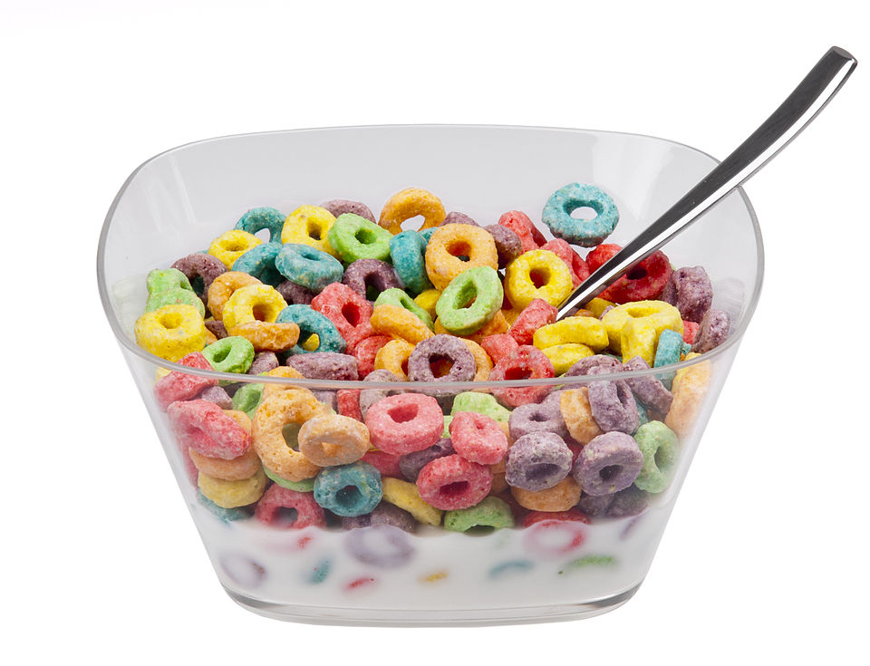

Breakfast cereal

Description
Baseball, hot dogs, burgers, and fries. What could possibly be
more American than that? Diabetes, but something that may or may
not contribute to that is a bunch of processed whole grains covered
in high fructose corn syrup and often other flavors. That's right--
it's cereal, and not the murderous kind.
Of course, you may procure the healthier kinds, such as oatmeal, and
add more substantial ingredients to it like protein powder or various
fruits. But then you miss out on those good ol' fashioned jokes from your
dentist. "Why are your teeth rotting, George,?" "You can't just eat
refind sugars and expect no cavities or consequences." Haha, good ole Dr.
Stevenson with his jokes.
Ingredients
- A glass or ceramic bowl, preferably, or plastic bowl if you hate the environment and are a heathen.
- Your favorite cereal: Cheer-Cheer-yos, Colored Rings that maybe taste like fruit, Corn and Sugar, etc.
- Your choice of milk: 0%, 1%, 2%, 100%, oat, almond, pea, rice, soy, macadamia, hemp, etc.
- Spoon, preferably metal, or plastic if once again you are a heathen
Instructions
- Go to local grocery store for milk and cereal
- Grab your bowl at home
- Pour in desired amount of cereal and then milk
- There is much debate in the cereal community about which you pour in first
and exactly how much milk you are supposed to use. Personally, I use the cereal
as a measurement for the milk, so I pour cereal first and the milk right above
the point that the cereal starts to float. I find that to be the optimal level
where the cereal does not absolutely drown but still enough milk in the cereal.
- Obtain your spoon from its appropriate location and enjoy
Home